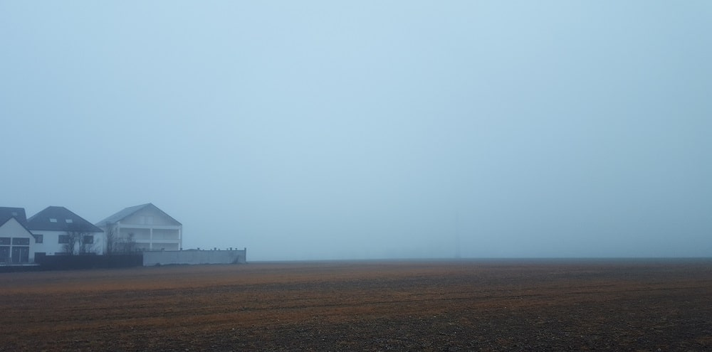
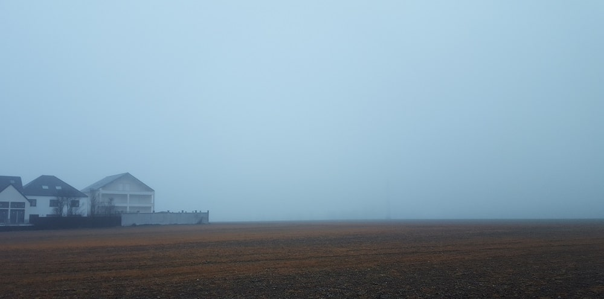

Projets photographiques
This project is linking a serie of "moving photographs" to openstreetmap objects .
This project showcases the materiality of suburban landscapes while commuters are away (physically but also with their mind beeing distracted), while working in the city.
It's intended as a poetic yet political statement illustrating no just the absence of people but also the absence of thoughts, interest or care for cities outskirts as a collective project.
 Serie of photographs showing the impact of weed killer chemicals used in fields on landscapes. The particular orange-yellow color seen on very large agricultural parcels
is an indication the field has been sprayed and left for several months for all grass, wild flowers and weeds to die. During this time, the product gets infiltrated in the soil and the water,
contaminating streams and groundwaters as well as soil-life. Irony is people passing by might even find it pretty, like some sort of fall-romantic color, as it is in fact the indication of soil poisening.

Serie of photographs showing the impact of weed killer chemicals used in fields on landscapes. The particular orange-yellow color seen on very large agricultural parcels
is an indication the field has been sprayed and left for several months for all grass, wild flowers and weeds to die. During this time, the product gets infiltrated in the soil and the water,
contaminating streams and groundwaters as well as soil-life. Irony is people passing by might even find it pretty, like some sort of fall-romantic color, as it is in fact the indication of soil poisening.

This work is licensed under a Creative Commons Attribution-NonCommercial-ShareAlike 4.0 International License.